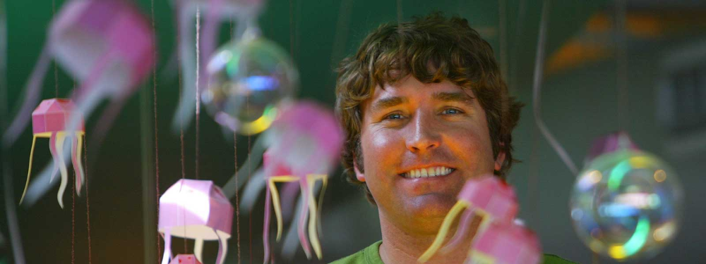

A Tribute to Stephen Hillenburg
Home
Timeline
Major Accomplishments

Hillenburg's Timeline
Stephen McDannell Hillenburg was born on August 21st, 1961 in Lawton, Oklahoma.
In 1984, Hillenburg started his professional career as a marine biologist teacher at the Orange County Marine Institute.
In 1989, two years after quitting his teaching career, Hillenburg enrolled at the California Institute of the Arts to pursue animation.
On 1993, Hillenburg was hired by Nickelodeon to work on Rocko's Modern Life. He worked with the show throughout its runtime.
In 1997, Hillenburg pitches idea for Spongebob Squarepants and is approved by Nickelodeon.
On March 2017, Hillenburg was diagnosed with ALS.
Hillenburg died on November 26, 2018 from battling his ALS.